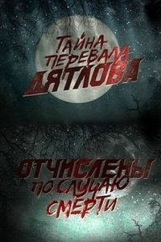

Операция «Фортуна»: Искусство побеждать
Операция «Фортуна»: Искусство побеждать Мой ужасный сосед
Мой ужасный сосед Черный ящик
Черный ящик Аферисты
Аферисты Крушение
Крушение Вавилон
Вавилон Чёрная Пантера: Ваканда навеки
Чёрная Пантера: Ваканда навеки



название
Перевал Дятлова. Отчислены по случаю смерти
год
страна
жанр
время
52 мин
Про фильм
Вслед за триллером Тайна перевала Дятлова вышел российский документальный фильм «Перевал Дятлова. Отчислены по случаю смерти», который рассказывает о странной, таинственной трагедии, произошедшей в 1959 году с группой туристов на Северном Урале. Но в отличии от художественного фильма данный фильм содержит множество достоверной информации: интервью жителей Урала, родственников погибших, опытных туристов-горнолыжников, участников поисковой группы 1959 года, интервью единственного выжившего члена группы Юрия Юдина, а так же последние фотографии, сделанные погибшими ребятами. Журналисты и съемочная группа отправляются в то самое злосчастное место, чтобы воссоздать события и разгадать загадку гибели группы Дятлова. © ГидОнлайн
Расскажи друзьям
Название
Что еще посмотреть
 Я буду рядом
Я буду рядом Вкус денег
Вкус денег Кон-Тики
Кон-Тики История
История Комментирование этого фильма доступно
Комментирование этого фильма доступно 
фильм полная лажа – сказочка для детей если кто всерьез интересуется этим делом – в инете полно ссылок на серьезные исследования с фактами и экспертизами, и там все по полочкам разложено. Никакой мистики и никаких «злых» военных, которые якобы для «избавления от свидетелей» зачем-то гоняли их километры по склону, сами не оставляя следов, разжигали им костры и срубали ветки для сидения и лежания на снегу – там не было и в помине. Все просто и банально – непредсказуемость природы и человеческие ошибки. На самом деле подобных случаев с гибелью целых групп полным-полно и даже летом (человеку для смерти достаточно переохлаждения даже от плюсовой температуры), но все уцепились за эту и придумывают нелепые глупые страшилки.
если кто всерьез интересуется этим делом – в инете полно ссылок на серьезные исследования с фактами и экспертизами, и там все по полочкам разложено. Никакой мистики и никаких «злых» военных, которые якобы для «избавления от свидетелей» зачем-то гоняли их километры по склону, сами не оставляя следов, разжигали им костры и срубали ветки для сидения и лежания на снегу – там не было и в помине. Все просто и банально – непредсказуемость природы и человеческие ошибки. На самом деле подобных случаев с гибелью целых групп полным-полно и даже летом (человеку для смерти достаточно переохлаждения даже от плюсовой температуры), но все уцепились за эту и придумывают нелепые глупые страшилки.
Залогинился только что бы оставить комментарий.
На счет темной кожи. Видели когда нибудь обморожение ? Нет ? Не на картинках, а вживую когда человек погибает ? Я на крайнем севере родился и вырос,видел. Цвет кожи меняеться из-за того что кристалл льда протыкает мембраны клетки. Так как человек еще жив то, кожа становиться сперва фиолетовой , потом коричневой из-за множественных повреждений клеток. Только у мертвой ткани кожа просто белеет на холоде, так как отсутсвует любая циркуляция жидкости.
Не порите чушь. Эта история на которой можно спикулировать и спикулировать будут.
Интересный фильм, но определенного вывода так и не содержит. Информация хранится в информационно поле Земли и доступна экстрасенсам в любой момент. В фильме также говорится, что выше палатки было место с выметенным кругом диаметром больше винтов вертолета. [спойлер] Отсюда радиация на телах. [спойлер] В фильме говорится, что в тот день видели светящиеся шары, переливающиеся разными цветами. Глаза же и языки могли съесть звери, птицы, либо инопланетники могли удалить. Кроме того, на последнем кадре в фотоаппарате запечатлен светящийся шар. Власти до сих пор скрывают существование разумной жизни в космосе, вот и нет четкого ответа. Все иные версии не подходят.
История жутко интересная,но к сожалению НИКОГДА так и не будет рассекречена,потому что истинную правду знают только сами участники этой экспедиции! А так, 10 из 10!
Согласна,малоинформативный фильм,особенно если раньше даже не то что интересовался,а просто слышал об этом деле.Меня ни одна версия не устроила,везде есть явные нестыковки,что видно даже непрофессионалу,обладающему логическим мышлением(к примеру,если бы это были военные,то простой и ПРИНЯТЫЙ в их кругах способ избавиться от свидетелей-не накручивать черте чего,а организовать «бесследную пропажу» экспедиции(из того,что я читала делаю вывод).И вообще,что за секретные испытания там,где охотники-манси постоянно шастают,и не только…Масштабные еще-да ни за что не поверю.
Любой НЕчеловеческий фактор я решительно отвергаю.
Фильм вцелом для незнакомых с делом Дятлова…им будет интересно.Здесь версии для старта,потом можете очень заинтересоваться,полопатить литературку/очерки/форумы и создать свою собственную аргументированную версию-для серых клеточек зарядочка отличная!
А ДЯТЛОВЦАМ ВЕЧНАЯ ПАМЯТЬ…
Спасибо за интересный фильм! 10из10!
После слов «одна из главных тайн 20-го века» выключил. Простите, такое смотреть не могу. В 20-м веке предостаточно гораздо более масштабных и значимых загадок. Сценаристу двойка!
к сожалению неинформативный фильм,есть и более интересные статьи и кино.
Громкое Дело – Гора Мертвецов – смотрите конец ,а потом паника ,звери , глаза могли легко скушать вороны ,короч трагический форс можор
тупой фильм опять виноваты злые РУССКИЕ
 , ребят конечно жалко
, ребят конечно жалко 
ППЦ [спойлер] Короч ужасное стечение обстоятельств + форсможор,который фильмах не придумают ,но он есть…беда не приходит одна
реально собрали в кучу все версии и так и осталось все не понятно…эти версии знаем и мы,где весь вывод этой истории???сама суть истории??? так что же случилось ,так точно и не ответили..!
конец перемудрили((( в итоге собрали все версии в кучу..и так ничего и не понятно((
Ничего так,но убедительнее и интереснее раследования чем у ракитина(хоть и книга) еще не видел.
Жуткая трагедия. Я думаю все погибли от рук военных. Власть замалчивает до сих пор эту страшную расправу. Намеренное убийство людей, случайно оказавшихся рядом с полигоном ! Тайна превыше всего – жуть!!!
Ни одной правдоподобной версии о причине их смерти. Лавина – вообще бред. Было бы это все сделано военными, то трупов дятловцев и палаток бы никто уже не нашел, зачем им было наносить такие тяжелые увечья, выкалывать глаза и вырывать языки, подвергать радиации, а затем аккуратно разложить их тела на всеобщее обозрение. Тут однозначно что-то другое, возможно не связанное с человеческим фактором
Фильм рождает больше вопросов, чем ответов…
Про ядерную начинку скорее всего бред полный. Не могут радионуклиды с такой скоростью разлагаться, что через 50 лет там и следов не осталось. Достаточно посмотреть Припять и последствия.
Про КГБ и Министерство обороны тоже маловероятно. Если бы, учитывая время произошедшего, они были бы в курсе, то никаких спасательных и поисковых экспедиций не могло быть однозначно. Сразу же – закрытое расследование со всеми соответствующими грифами секретности, уровнями доступа и сроками давности. Поэтому и реакция от соответствующих служб выглядит явно запоздалой. Но какие-то факты, вероятно, были найдены.
Людей реально жалко… И хочется узнать, что же там действительно произошло…
Не смотря на то, что версий много, каждый, кто смотрит, будет избирать ту, которую ему бы хотелось. Любители фантастики конечно предпочтут верить в мистику. Скептики же будут склоняться к более земным, правдоподобным версиям. В любом случае тайна есть, и каждого из нас она приманивает. Поэтому посмотреть стоит. Хотя бы для того, чтобы узнать еще одну из печальных историй человечества.
Жалко этих студентов, такая страшная смерть! Пока не будут раскрыты секретные материалы тех годов, никто не узнает правды, в этом фильме лишь догадки…
Скорее всего испытания ракеты,фильм стоющий! 10/10
Документалка понравилась,все версии имеют право на существование пока мы не узнаем правду.Дело ясное,что дело темное.
Ничего не слышал об этой истории с перевалом Дятлова,но фильм ликвидировал пробел.10/10
Фильм смотреть можно. И интересно. Вот только пафос, с его шумо-музыкой, старается изобразить фильм ещё круче. Но только мешает. И думается – сознательно.
не понравилось.Радиация,сломаные кости,секреты одни. Чушь. Секречики х..евы
Ужс. Такого бреда я ещё не видела (нет, ну видела конечно)). если начало было ещё интересным, то начиная с середины пошла полная ерунда. а конец меня просто убил. всё очень дёшево и предсказуемо( единственный плюс – это начало.
Такого бреда я ещё не видела (нет, ну видела конечно)). если начало было ещё интересным, то начиная с середины пошла полная ерунда. а конец меня просто убил. всё очень дёшево и предсказуемо( единственный плюс – это начало.
Они увидели военные испытание и военные их убили, вот и все. Я даже сомневаюсь, что они, Дятловцы, ставили палатку. Скорее всего группа даже не дошла до того места где их нашли. А палатку поставили военные, порезали ее, изувечили тела, разбросали их по склону. ИМХО